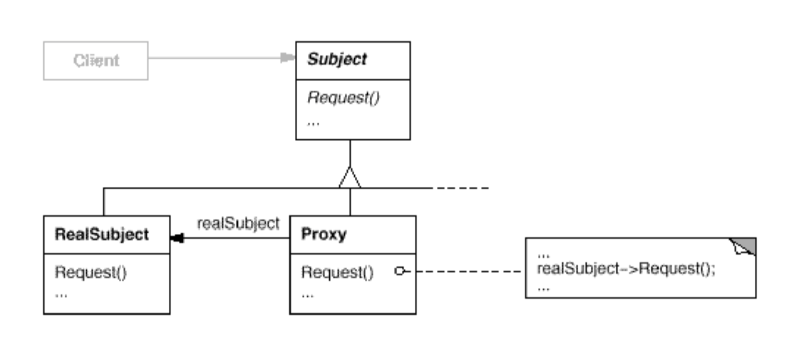

Proxy Pattern
객체를 대리자를 통해 접근한다.
구성
- Proxy
- Real Subject로의 참조를 관리하고 접근을 제어한다. Real Subject가 구현하고 있는 인터페이스를 구현하므로 Real Subject를 사용하는 것처럼 사용할 수 있다.
- Subject
- Proxy와 Real Subject가 구현하는 인터페이스. 이 인터페이스를 통해 이들이 상호 교환적으로 사용될 수 있다.
- Real Subject
- Proxy가 대리하고 있는 실제 객체
구조

장단점
- Proxy는 사용자로부터 최적화와 관련된 내용을 감추어 코드를 단순하게 해준다.
- 이미 실제 객체가 생성되었다면 Proxy를 통한 접근은 오버헤드가 된다. 이 패턴의 핵심은 Proxy를 실제 객체인 것처럼 다루는 것이다. 그러므로 getRealObject()와 같은 메소드는 Proxy패턴의 정신에 위배된다.
- 큰 서브시스템과 통신하기 위해 여러 개의 리모트 프록시를 사용할 필요가 있는 경우가 있다. 이때에는 서브시스템의 각 클래스에 대한 프록시를 생성하는 대신 Facade에 대한 하나의 리모트 프록시를 성성하는 것이 좋다.
예제
예제 코드 보기